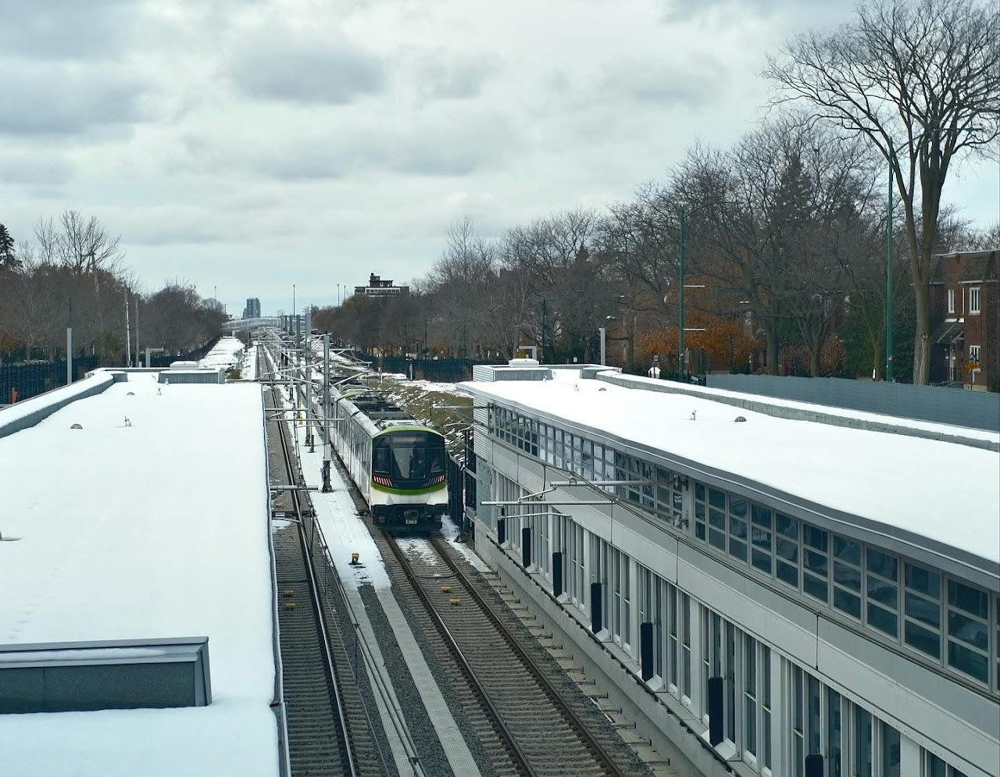
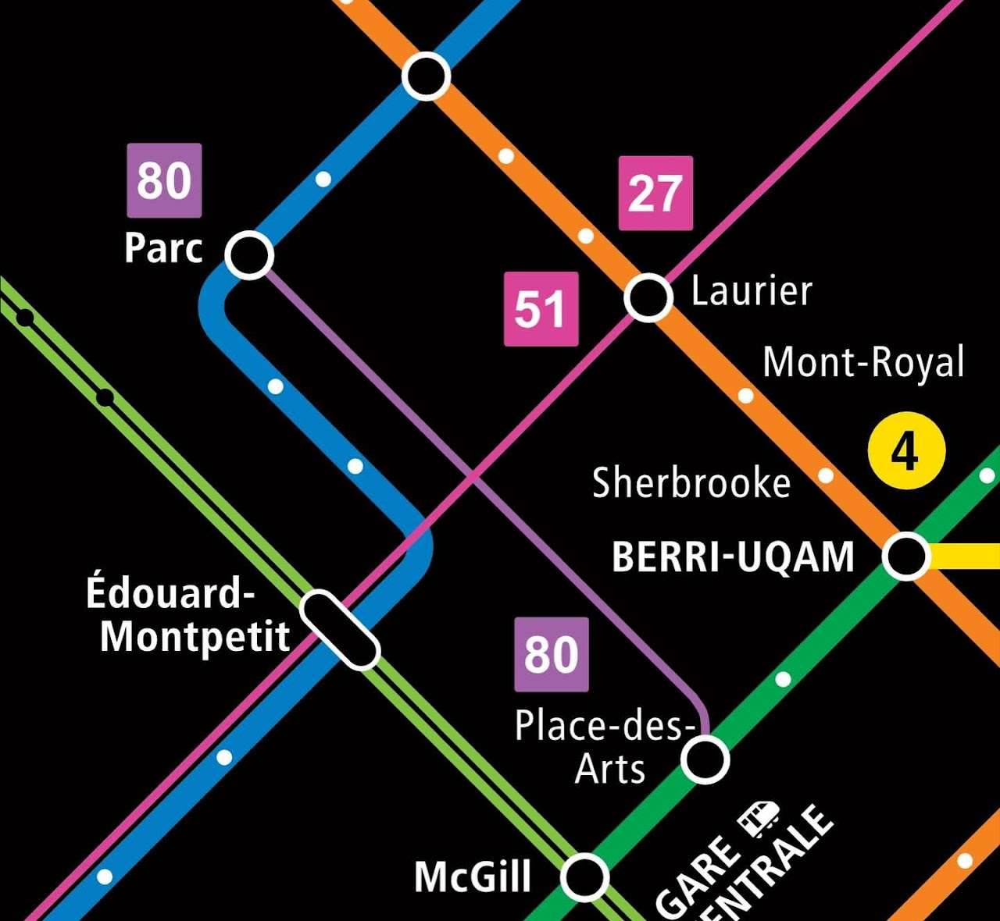

14 nouvelles stations du Réseau Express Métropolitain entreront en service ce lundi 17 novembre! Il s'agit de la plus importante ouverture de stations de métro à Montréal depuis plus de 50 ans.
Après l'ouverture du tronçon entre Brossard, sur la rive-sud de Montréal, et la Gare Centrale en 2023, c'est la branche A4 - Deux-Montagnes qui ouvrira pour relier la rive-nord, Laval et Montréal.

🚇 Accès en bus depuis le Plateau
Pour les résidents du Plateau-Mont-Royal, cette arrivée est une excellente nouvelle : la station McGill se trouve à deux pas de Milton-Parc, et la station Édouard-Montpetit sera facilement accessible grâce à la ligne de bus 51.
C'est pourquoi il est essentiel d'améliorer notre réseau d'autobus, par exemple avec notre proposition de réseau express bus, afin d'assurer une bonne connexion entre le REM et nos quartiers.

🚴 Mobilité active et connectivité
Avec la nouvelle voie cyclable sur Saint-Urbain et le prolongement de celle sur Côte-Sainte-Catherine, accéder à ces deux stations à vélo sera désormais plus rapide, confortable et sécuritaire.
La réussite d'une ligne de transport collectif structurante dépend de sa connectivité avec les autres modes. Continuons d'investir dans un réseau intégré, efficace et réellement adapté à nos déplacements quotidiens 💚🚇🚲
Enjeux et opportunités pour le Plateau
Opportunités:
- Accès rapide aux deux stations principales (McGill et Édouard-Montpetit)
- Connexion améliorée vers la rive-nord et Laval
- Potentiel d'augmentation de la densité résidentielle et commerciale
- Réduction des émissions de carbone avec un meilleur accès au transport collectif
Défis à relever:
- Amélioration du réseau d'autobus pour assurer une bonne connexion
- Expansion des voies cyclables pour favoriser l'accessibilité multimodale
- Gestion de la congestion et des changements d'utilisation des terres
- Maintien du caractère unique du Plateau-Mont-Royal
Conclusion: L'arrivée du REM représente une opportunité majeure pour le Plateau-Mont-Royal de renforcer sa position comme quartier urbain dynamique et bien desservi. Avec des investissements appropriés dans le transport actif et les services de bus de qualité, le Plateau peut devenir un modèle d'intégration réussie d'une nouvelle infrastructure majeure.